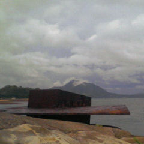
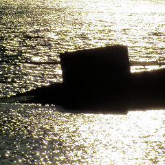

「島ごと美術館ってのは
どこにあるんですか？」
「あちらこちらに
ありますけど・・・」
「はぁ？」
島の各所に
オブジェ（仏・objet）
を設置して
島全体がまるで
大きな美術館みたいだね
という「見立て」である。
島ごと美術館
という建物は
どこにもない。
空間を移動するために
時間とエネルギーが
必要とされるが
入場料は要らない。
この四角い
金属の塊みたいなモノも
その構想の一部で
海老塚先生の
芸術作品なのである。
天気のよい休日には
釣り人が
鉄板に乗っている
事もある。
水平になっていて
こまごまとした
道具等を置くのに
ちょうどいいらしい。
光る波を背景に
立ち姿が逆光で
シルエットになって
いい感じの画になる。
こんなふうに
使用される事も
想定した上での
設計なのだろうか。
一般的に
芸術作品といふものは
日々の暮らしの
役には立たない。
しかし、この作品は
通常のトマソン物件とは
逆向きのベクトルで
芸術の壁を超越した
と言へるかもしれない。
参考文献
考えなしの行動？
Jane F. Suri+IDEO 著
森博嗣 訳
デザインの生態学
後藤武
佐々木正人
深沢直人 共著
松永真、デザインの話。＋11
松永真 著
※松永先生の
「千里眼」は
サンセットビーチに
引っ越しました。